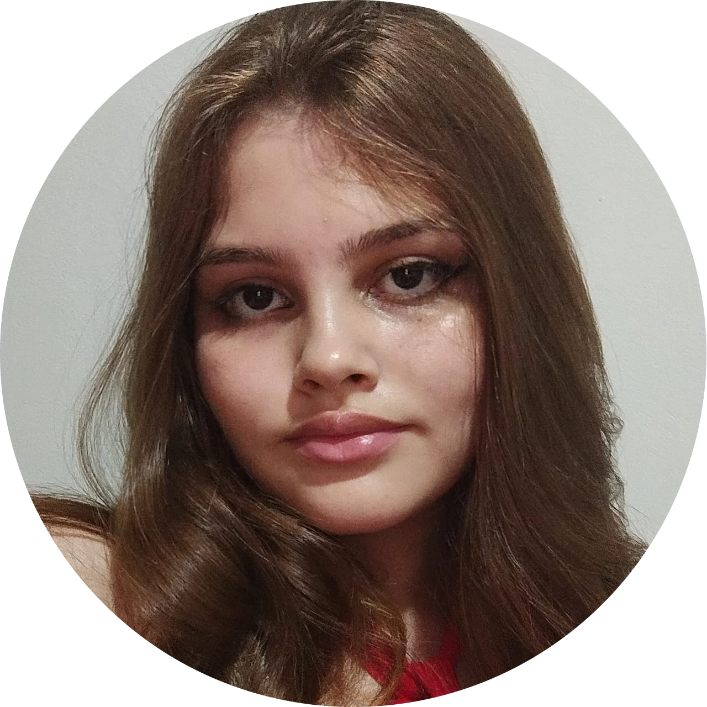

Nossa Equipe
Equipe de Projeto
←
→

Isabella Garrones
Gerente de Projeto
Coordena as atividades da equipe, acompanha prazos e metas e assegura a execução adequada do projeto em todas as suas etapas.
Professores Envolvidos
←
→
Professora Kelly
Programação Web
Fornece suporte técnico e pedagógico no desenvolvimento das soluções, orientando a equipe no uso adequado das tecnologias empregadas.